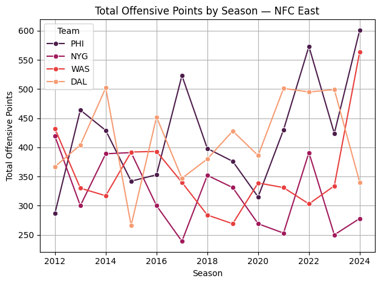

import pandas as pd
import numpy as np
import seaborn as sns
import matplotlib.pyplot as pltAssignment Four
Select a dataset with at least 5 columns. Perform the following in a notebook: - Clean and filter the dataset. - Apply at least 2 groupby operations with aggregations. - Reshape the dataset at least once (pivot, melt, etc.). - Create 3 visualizations from the cleaned dataset. - Submit .ipynb and .html.
weekly_offense = pd.read_csv("weekly_team_stats_offense.csv")
weekly_offense = weekly_offense.dropna(subset=['team'])
weekly_offense = weekly_offense.dropna(subset=['total_off_points'])
weekly_offense['total_off_points'] = weekly_offense['total_off_points'].astype(int)
weekly_offense = weekly_offense[weekly_offense['week'] > 0]weekly_offense.head()| game_id | season | week | team | season_type | shotgun | no_huddle | qb_dropback | qb_scramble | total_off_yards | ... | average_fourth_down_failed | average_rush_touchdown | average_pass_touchdown | average_safety | average_interception | average_fumble | average_fumble_lost | average_fumble_forced | average_fumble_not_forced | average_fumble_out_of_bounds | |
|---|---|---|---|---|---|---|---|---|---|---|---|---|---|---|---|---|---|---|---|---|---|
| 0 | 2012_01_SEA_ARI | 2012 | 1 | ARI | REG | 31 | 0 | 38 | 1 | 258 | ... | 0.000000 | 1.000000 | 1.000000 | 0.0 | 1.000000 | 2.000000 | 1.000000 | 2.000000 | 0.0 | 0.0 |
| 1 | 2012_02_ARI_NE | 2012 | 2 | ARI | REG | 25 | 7 | 30 | 1 | 242 | ... | 0.000000 | 1.000000 | 1.000000 | 0.0 | 0.500000 | 2.000000 | 1.500000 | 2.000000 | 0.0 | 0.0 |
| 2 | 2012_03_PHI_ARI | 2012 | 3 | ARI | REG | 31 | 0 | 29 | 2 | 321 | ... | 0.333333 | 0.666667 | 1.333333 | 0.0 | 0.333333 | 1.666667 | 1.333333 | 1.666667 | 0.0 | 0.0 |
| 3 | 2012_04_MIA_ARI | 2012 | 4 | ARI | REG | 52 | 5 | 56 | 0 | 352 | ... | 0.250000 | 0.500000 | 1.750000 | 0.0 | 0.750000 | 1.500000 | 1.000000 | 1.500000 | 0.0 | 0.0 |
| 4 | 2012_05_ARI_STL | 2012 | 5 | ARI | REG | 56 | 7 | 59 | 1 | 334 | ... | 0.600000 | 0.400000 | 1.400000 | 0.0 | 0.600000 | 1.400000 | 1.000000 | 1.400000 | 0.0 | 0.0 |
5 rows × 115 columns
print(weekly_offense.columns)
print(len(weekly_offense.columns))Index(['game_id', 'season', 'week', 'team', 'season_type', 'shotgun',
'no_huddle', 'qb_dropback', 'qb_scramble', 'total_off_yards',
...
'average_fourth_down_failed', 'average_rush_touchdown',
'average_pass_touchdown', 'average_safety', 'average_interception',
'average_fumble', 'average_fumble_lost', 'average_fumble_forced',
'average_fumble_not_forced', 'average_fumble_out_of_bounds'],
dtype='object', length=115)
115team_season_offense = weekly_offense.groupby(['team', 'season']).agg({
'total_off_yards': 'sum',
'pass_attempts': 'sum',
'complete_pass': 'sum',
'passing_yards': "sum",
'total_off_points':'sum',
'third_down_converted' : 'sum',
"third_down_failed" : 'sum',
'interception' : 'sum',
'win' : "max",
"loss": "max",
"tie": "max"
}).reset_index()
team_season_offense| team | season | total_off_yards | pass_attempts | complete_pass | passing_yards | total_off_points | third_down_converted | third_down_failed | interception | win | loss | tie | |
|---|---|---|---|---|---|---|---|---|---|---|---|---|---|
| 0 | ARI | 2012 | 4587 | 587 | 337 | 3383 | 233 | 58 | 172 | 21 | 5 | 11 | 0 |
| 1 | ARI | 2013 | 5831 | 552 | 363 | 4291 | 346 | 74 | 136 | 22 | 10 | 6 | 0 |
| 2 | ARI | 2014 | 5407 | 582 | 336 | 4072 | 295 | 93 | 143 | 14 | 11 | 6 | 0 |
| 3 | ARI | 2015 | 7376 | 625 | 401 | 5359 | 492 | 101 | 120 | 19 | 14 | 4 | 0 |
| 4 | ARI | 2016 | 6157 | 629 | 383 | 4425 | 399 | 87 | 127 | 17 | 7 | 9 | 0 |
| ... | ... | ... | ... | ... | ... | ... | ... | ... | ... | ... | ... | ... | ... |
| 411 | WAS | 2020 | 5799 | 628 | 415 | 4102 | 339 | 95 | 144 | 17 | 7 | 10 | 0 |
| 412 | WAS | 2021 | 5807 | 535 | 356 | 3746 | 331 | 87 | 137 | 15 | 7 | 10 | 0 |
| 413 | WAS | 2022 | 5926 | 538 | 344 | 3783 | 303 | 81 | 149 | 16 | 9 | 8 | 0 |
| 414 | WAS | 2023 | 5766 | 615 | 407 | 4174 | 334 | 77 | 139 | 21 | 4 | 13 | 0 |
| 415 | WAS | 2024 | 7758 | 630 | 441 | 4777 | 564 | 118 | 143 | 10 | 14 | 6 | 0 |
416 rows × 13 columns
points_pivot = team_season_offense.pivot(index='team', columns='season', values='total_off_points')
nfc_east = points_pivot.loc[['PHI',"NYG","WAS","DAL"]]
nfc_east_reset = nfc_east.reset_index().melt(
id_vars='team',
var_name='season',
value_name='total_points'
)
sns.lineplot(
data=nfc_east_reset,
x='season',
y='total_points',
hue='team',
palette = "rocket",
marker='o'
)
plt.title('Total Offensive Points by Season — NFC East')
plt.xlabel('Season')
plt.ylabel('Total Offensive Points')
plt.legend(title='Team')
plt.grid(True)
plt.tight_layout()
plt.show()
season_totals = weekly_offense.groupby('season').agg({
'total_off_yards': 'sum',
'pass_attempts': 'sum',
'complete_pass': 'sum',
'passing_yards': "sum",
'third_down_converted' : 'sum',
"third_down_failed" : 'sum',
'interception' : 'sum',
}).reset_index()
season_totals| season | total_off_yards | pass_attempts | complete_pass | passing_yards | third_down_converted | third_down_failed | interception | |
|---|---|---|---|---|---|---|---|---|
| 0 | 2012 | 193222 | 17951 | 11227 | 131045 | 2701 | 4345 | 477 |
| 1 | 2013 | 194639 | 18256 | 11508 | 134235 | 2774 | 4437 | 512 |
| 2 | 2014 | 192850 | 18058 | 11621 | 133841 | 2841 | 4221 | 469 |
| 3 | 2015 | 195242 | 18561 | 11948 | 137568 | 2758 | 4350 | 452 |
| 4 | 2016 | 194124 | 18578 | 11984 | 136465 | 2783 | 4202 | 433 |
| 5 | 2017 | 185565 | 17649 | 11244 | 127706 | 2732 | 4317 | 427 |
| 6 | 2018 | 195061 | 17783 | 11807 | 134580 | 2607 | 4040 | 427 |
| 7 | 2019 | 194308 | 18060 | 11736 | 133868 | 2663 | 4110 | 416 |
| 8 | 2020 | 200599 | 18491 | 12323 | 136907 | 2840 | 3950 | 415 |
| 9 | 2021 | 203488 | 18954 | 12605 | 138718 | 2922 | 4284 | 448 |
| 10 | 2022 | 201470 | 18475 | 12142 | 132795 | 2898 | 4385 | 432 |
| 11 | 2023 | 198527 | 18653 | 12334 | 134713 | 2904 | 4534 | 437 |
| 12 | 2024 | 201195 | 18098 | 12093 | 132607 | 2855 | 4308 | 403 |
season_totals['total_third_downs'] = season_totals['third_down_converted'] + season_totals['third_down_failed']
season_totals['ave_third_down_comp'] = season_totals['third_down_converted'] / season_totals['total_third_downs']
season_totals| season | total_off_yards | pass_attempts | complete_pass | passing_yards | third_down_converted | third_down_failed | interception | total_third_downs | ave_third_down_comp | |
|---|---|---|---|---|---|---|---|---|---|---|
| 0 | 2012 | 193222 | 17951 | 11227 | 131045 | 2701 | 4345 | 477 | 7046 | 0.383338 |
| 1 | 2013 | 194639 | 18256 | 11508 | 134235 | 2774 | 4437 | 512 | 7211 | 0.384690 |
| 2 | 2014 | 192850 | 18058 | 11621 | 133841 | 2841 | 4221 | 469 | 7062 | 0.402294 |
| 3 | 2015 | 195242 | 18561 | 11948 | 137568 | 2758 | 4350 | 452 | 7108 | 0.388014 |
| 4 | 2016 | 194124 | 18578 | 11984 | 136465 | 2783 | 4202 | 433 | 6985 | 0.398425 |
| 5 | 2017 | 185565 | 17649 | 11244 | 127706 | 2732 | 4317 | 427 | 7049 | 0.387573 |
| 6 | 2018 | 195061 | 17783 | 11807 | 134580 | 2607 | 4040 | 427 | 6647 | 0.392207 |
| 7 | 2019 | 194308 | 18060 | 11736 | 133868 | 2663 | 4110 | 416 | 6773 | 0.393179 |
| 8 | 2020 | 200599 | 18491 | 12323 | 136907 | 2840 | 3950 | 415 | 6790 | 0.418262 |
| 9 | 2021 | 203488 | 18954 | 12605 | 138718 | 2922 | 4284 | 448 | 7206 | 0.405495 |
| 10 | 2022 | 201470 | 18475 | 12142 | 132795 | 2898 | 4385 | 432 | 7283 | 0.397913 |
| 11 | 2023 | 198527 | 18653 | 12334 | 134713 | 2904 | 4534 | 437 | 7438 | 0.390428 |
| 12 | 2024 | 201195 | 18098 | 12093 | 132607 | 2855 | 4308 | 403 | 7163 | 0.398576 |
plt.figure(figsize=(12, 8))
sns.barplot(
data=season_totals,
x='ave_third_down_comp',
y='season',
orient='h'
)
plt.title('Average Third Down Conversion')
plt.xlabel('Rate')
plt.ylabel('Season')
plt.tight_layout()
plt.show()
import altair as alt
scatter = alt.Chart(team_season_offense).mark_circle(size=80).encode(
x=alt.X('win:Q', title='Wins'),
y=alt.Y('loss:Q', title='Losses'),
color=alt.Color('team:N', title='Team'),
tooltip=['team', 'season', 'win', 'loss', 'tie']
).properties(
width=600,
height=400,
title='Team Season Records: Wins vs Losses'
).interactive() # enables zoom & hover
scatter